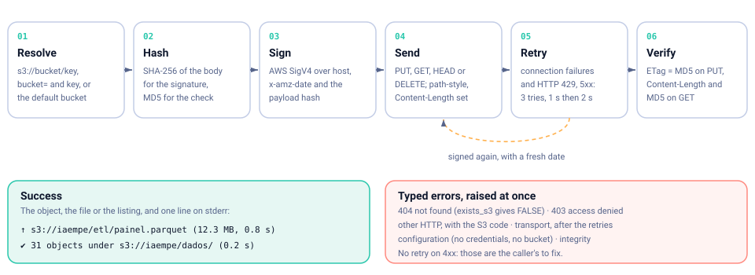
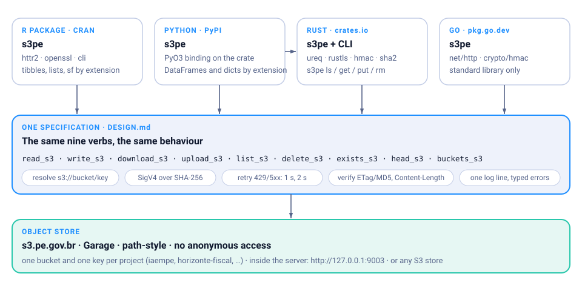

Objects in and out of s3.pe.gov.br, from Rust and the shell.
The core of the s3pe family: nine verbs, a builder, typed errors, and the s3pe command for scripts and servers. ureq and rustls, no system OpenSSL.


Built to be trusted with the data
A client that moves the files a pipeline depends on has one job: either the bytes arrived, or you hear about it. Everything here serves that.
Signed the way Garage wants
AWS Signature V4 over the real SHA-256 of the body. No unsigned payloads, no aws-chunked trailers, path-style URLs.
Retries that know when to stop
Connection failures and HTTP 429/500/502/503/504: three tries, 1 s then 2 s, signed again with a fresh date. Never on other 4xx.
Every byte accounted for
ETag against the local MD5 after a PUT; Content-Length and MD5 after a GET. Downloads land in a .s3pe-part file and are renamed when complete.
Typed errors
Error::NotFound, AccessDenied, Http { status, code }, Transport, Config, Integrity. Match on them, do not parse messages.
Small and portable
ureq with rustls and bundled roots: no OpenSSL to find, builds on Linux, macOS and Windows, Rust 1.85 or later. #![forbid(unsafe_code)].
A command line too
cargo install s3pe gives s3pe ls | cat | get | put | rm | head | buckets, with exit codes for scripts and credentials read only from the environment.
The nine verbs
Free functions over a client built from the environment, and the same verbs as methods of Client. Bytes in, bytes out: the crate does not pick formats, the Python and R editions do.
| Verb | Does |
|---|---|
read_s3 | GET into a Vec<u8> |
write_s3 | PUT bytes, content type guessed from the key |
download_s3 | GET to a file, streaming |
upload_s3 | PUT from a file, streaming, two passes |
list_s3 | every Object under a prefix, all pages |
exists_s3 | bool |
head_s3 | Option<Object>: size, type, date, ETag |
delete_s3 | idempotent |
buckets_s3 | Vec<Bucket> |
A key is s3://bucket/key, or a bare key when the bucket is configured (S3PE_BUCKET or the client). Credentials: AWS_ACCESS_KEY_ID and AWS_SECRET_ACCESS_KEY; endpoint S3PE_ENDPOINT, default https://s3.pe.gov.br.
What happens in every call
The same six steps in the four editions.

Resolve and hash
s3://bucket/key or bucket plus key; SHA-256 for the signature, MD5 for the check.
Sign and send
SigV4 over host, date and payload hash; path-style, Content-Length, no chunked trailers.
Retry
Connection failures and 429/5xx, three tries, 1 s then 2 s. Other 4xx come straight back.
Verify and report
ETag and Content-Length checked; one line on stderr; typed errors otherwise.
Install & run
Rust 1.85 or later. Changes between versions in the changelog.
$ cargo add s3pe # library (+ CLI target)
$ cargo add s3pe --no-default-features # library only, no clap
$ cargo install s3pe # the s3pe command// an explicit client
let s3 = s3pe::Client::builder()
.endpoint("http://127.0.0.1:9003")
.credentials("GK…", "…")
.bucket("iaempe")
.build()?;
let bytes = s3.read("dados/metadata.json")?;
s3.download("dados/pe.geojson", "pe.geojson")?;
if let Some(m) = s3.head("etl/painel.parquet")? {
println!("{} bytes", m.size);
}
match s3.read("missing") {
Err(s3pe::Error::NotFound { .. }) => {}
other => { other?; }
}# the command line
$ s3pe buckets
$ s3pe ls -l s3://iaempe/dados/
$ s3pe cat s3://iaempe/dados/metadata.json | jq .ultimo_mes
$ s3pe get s3://iaempe/dados/pe_municipios.geojson
$ s3pe put painel.parquet s3://iaempe/etl/
↑ painel.parquet → s3://iaempe/etl/painel.parquet (12.3 MB, 0.8 s)
$ s3pe rm s3://iaempe/etl/old.parquet
$ s3pe --endpoint http://127.0.0.1:9003 -b iaempe ls dados/
# exit codes: 0 ok · 2 not found · 3 access denied · 4 configArchitecture
The crate is the core of the family: the Python package is a PyO3 binding on it, while R and Go reimplement the same specification in their own idiom. One repository, one version, one DESIGN.md.
